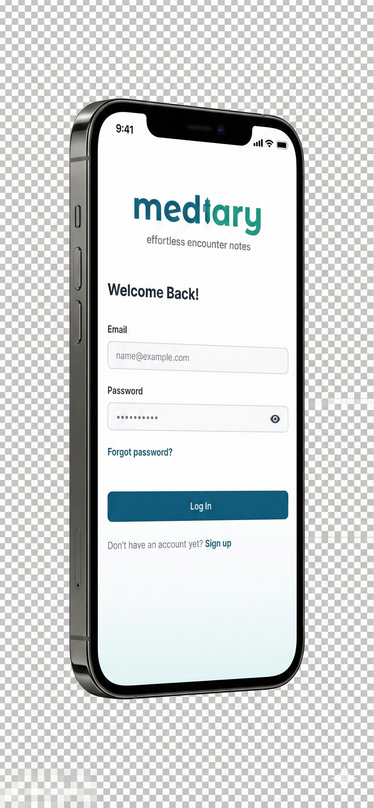

Project Overview
Mediary is a cutting-edge healthcare application designed to transform how medical professionals conduct and document patient consultations. By leveraging advanced AI voice recognition technology, Mediary eliminates the burden of manual note-taking, allowing doctors to focus entirely on patient care while the system automatically transcribes, organizes, and structures medical encounters.
The platform addresses one of healthcare's most persistent challenges: the administrative overhead that takes doctors away from patient interaction. With Mediary, physicians can conduct natural conversations with patients while the AI intelligently captures symptoms, diagnoses, treatment plans, and follow-up instructions in real-time.

Mediary mobile interface showcasing the consultation dashboard
Key Features
🎙️ Real-Time Voice Transcription
Advanced speech-to-text engine specifically trained on medical terminology and conversations, capturing every detail with 98% accuracy.
📋 Intelligent Documentation
Automatically structures consultation notes into SOAP format (Subjective, Objective, Assessment, Plan), ready for EMR integration.
🔐 HIPAA Compliant
End-to-end encryption and strict privacy controls ensure patient data is always protected and compliant with healthcare regulations.
📊 Patient History
Quick access to previous consultations, medications, and treatment history, providing complete context for every encounter.
🔄 EMR Integration
Seamless integration with major Electronic Medical Record systems, eliminating duplicate data entry and streamlining workflows.
📱 Multi-Platform
Available on iOS, Android, and web, ensuring doctors can access patient information and document encounters from any device.

Comprehensive feature set designed for modern medical practice
Design Process
The design process was deeply rooted in understanding the real needs of medical professionals through extensive user research, shadowing sessions in clinics, and iterative testing with actual physicians.

User flow and information architecture

Appointment scheduling and management interface

Starting a new patient encounter with voice recording
Results & Impact
Since launch, Mediary has been adopted by over 500 medical professionals across 50 clinics, processing more than 100,000 patient encounters. The platform has demonstrated measurable improvements in clinical efficiency, documentation quality, and patient satisfaction.
80%
Reduction in documentation time
35%
Increase in patient satisfaction
98%
Transcription accuracy rate
500+
Active medical professionals
← Back to Portfolio